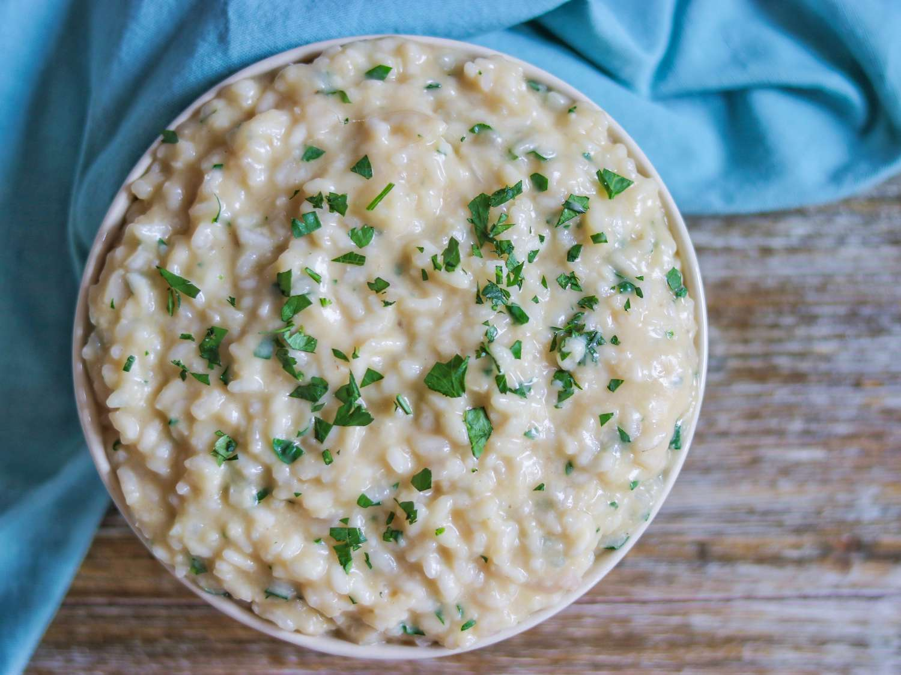

Home
Risotto

Description
A creamy and flavorful Italian rice dish, slowly cooked with broth until rich and velvety. It can be made with various ingredients like
mushrooms, seafood, or saffron (Risotto alla Milanese), offering a deliciously comforting meal.
Ingredients
- 200g Arborio rice (or Carnaroli rice)
- 1 small onion, finely chopped
- 2 tbsp butter
- 2 tbsp olive oil
- 100ml dry white wine (optional)
- 750ml hot vegetable or chicken broth
- 50g Parmesan cheese, grated
- Salt and black pepper to taste
Optional Additions:
- 100g mushrooms, sliced (for mushroom risotto)
- 1 pinch saffron (for Risotto alla Milanese)
- 100g shrimp (for seafood risotto)
Directions
-
Sauté the Onion
- In a pan, heat olive oil and 1 tbsp butter over medium heat.
- Add the chopped onion and sauté until soft and translucent.
-
Toast the Rice
- Add the Arborio rice and stir for 1-2 minutes until slightly translucent.
- If using, pour in the white wine and let it evaporate.
-
Cook the Risotto
- Add a ladle of hot broth and stir until absorbed. Repeat this process, adding broth little by little, stirring constantly. This takes about 15-18 minutes.
-
Finish the Dish
- Once the rice is creamy and al dente, turn off the heat.
- Stir in the remaining butter and Parmesan cheese. Season with salt and black pepper.
-
Serve & Enjoy
- Let it sit for a minute before serving. Garnish with extra Parmesan and a drizzle of olive oil.
Creamy, rich, and comforting—this risotto is pure Italian perfection! 🍚✨